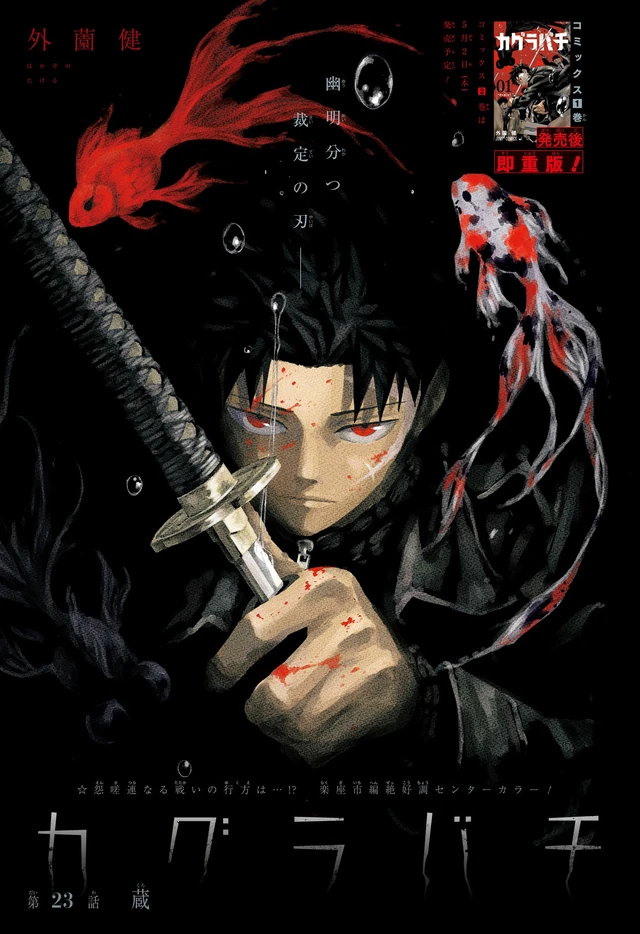

Overview
Hiyuki is assigned to problems the Kamunabi cannot file. Flame Bone is a learned, monstrous sorcery that lets her stand in front of Shinuchi without becoming a footnote. She starts as Chihiro’s obstacle, the state with a personality, and becomes the reason the Rakuzaichi actually ends: she will burn the auction if the alternative is leaving people in the Storehouse.
Tafuku’s calm is the other half of the act. Together they are the Kamunabi as it wishes it looked.
Personality
Short temper, actual principles. She is assigned to problems the Kamunabi cannot file, and she treats that assignment as a license to be angry in public. The temper is not the point. The point is that she will burn the Rakuzaichi if the alternative is leaving people in the Storehouse. Chihiro will not spend innocents for the hunt. Hiyuki will not spend them for the state. That is why the auction has an ending that is not just Chihiro’s arm.
She starts as his obstacle, the organization with a personality, and becomes the person you might, on a good day, stand next to. The Kamunabi want the blades under seal. She wants the building emptied. Those are not the same order. Tafuku Mihara’s calm is the other half of the act: domain sorcery next to a hereditary skeleton, the bureau as it wishes it looked. The rest of the leadership is Kasen’s leak, Ichiki’s students, Azami’s Coin. Hiyuki is the pointed end that still has a conscience attached.
Later pages call Azami the strongest in a different room. The fandom has been litigating the trophy ever since. She does not. She is on a permission slip. The joke is that the Kamunabi issued a license for how much god she can wear to work, and she still decides the auction is worth the write-up.
Abilities
Flame Bone of the Starving, Gasha no Enkotsu, is a Kagari hereditary: pieces of a giant flaming skeleton, often named Riko in explainers. It is one of the few arts the text will stand next to an Enchanted Blade. She can stand in front of Shinuchi without becoming a footnote. That is the job description. She is not a blade bearer. A Lifelong Contract would shut an innate art off; Flame Bone is the state’s attempt to industrialize a clan miracle the way it industrializes Datenseki.
The authorization is the fun detail. She is allowed to manifest the skeleton up to a line, ribs, torso, as if a rank were stamped on how much of the art she can use. Part 2 theory videos ask whether there is a full-body form, whether this is a contract with something that has a name, whether it is a Susanoo with a timesheet. Weekend Weebs’ Naruto-parallel piece is the cleanest version of that last one, and it is honest that Hokazono loves Naruto without calling the art theft.
Tafuku’s duel domain is the other half of the kit. Together they control a room the way Hakuri controls a Storehouse and Shiba leaves one. She does not teleport. She does not register blades. She burns the problem until the prisoners can walk. If the skeleton ever stands up all the way, it will not be because a rank was stamped. It will be because she decided the auction, or the island, was worth the write-up.
Story role
She arrives in the Rakuzaichi arc. Volume 3, Knight of Darkness, puts her on the jacket with Chihiro and Kyora, flame-orange against auction green-black. Chapter 23’s color page is her on the auction pages. Chihiro meets the discarded Sazanami and the Kamunabi’s flame in the same stretch. She is the obstacle first: the state telling the smith’s son that Shinuchi is their problem. Then the Storehouse opens, Tenri dies on Datenseki, Kyora touches Magatsumi, and the building starts to become a second island.
She and Chihiro keep that from finishing. Prisoners leave. The 208th Rakuzaichi ends. Chihiro gives the Kamunabi Magatsumi and keeps Enten by joining them. Hiyuki is the reason that bargain has a moral floor. Volume 5, Fervent, crowds her onto the jacket with Chihiro, Kyora, and Hakuri. Shinuchi heat. She is not in the Vs. Sojo compound. She is what the book sends when the problem is no longer one customer with a weather sword.
The Sword Bearer Assassination arc is mostly bearers, Hishaku, and hotel. She remains the pointed end of the building Chihiro has now joined. Kasen’s leak, Kudo’s death, Yura in the basement: the organization she works for is the same one that hid a Sword Master and sold a smith’s address. Part 1 ends with Akemura loose in that building. Hiyuki is still the soldier on the permission slip. The island will be the next write-up.
Relationships
Tafuku Mihara is the partner: domain sorcery, the calm. Together they are the Kamunabi as it wishes it looked. Chihiro is the obstacle who becomes a colleague, Magatsumi surrendered, Enten kept, the auction emptied because both of them refused the Storehouse as a grave. Kyora is the auctioneer she will burn a two-hundred-year market to stop. Hakuri is the door those prisoners actually leave through.
Azami is the other strength argument in a different room, and the man who hid Kunishige with Shiba. Kasen is the director who leaked the address. Ichiki trained Shiba and Azami. Hiyuki works for all of that letterhead without becoming it. Yura is the Hishaku mind she is pointed at. She does not have a Lifelong Contract to cut. She has a skeleton and a slip of paper.
Notes
Hiyuki Kagari. Kamunabi elite. Flame Bone of the Starving. Partner: Tafuku Mihara. Said to rival an Enchanted Blade. Volume 3 and Volume 5 jackets. Chapter 23 color page. The Flame Bone essay is the authorization joke written out.
YouTube has not gotten over the permission slip. Official chapters: VIZ / MANGA Plus. Weekend Weebs’ homage list treats Flame Bone as Naruto DNA; Hokazono’s editor has said the Naruto love out loud. Homage, not a court case.
The other half of the act
Tafuku Mihara is the partner this file used to leave as a caption. Duel domain: two people, one match, then the street returns. He looks like a sumo wrestler and fights like a referee. Together they are how the Kamunabi wishes it looked. The Anti-Cloud Gouger Special Forces are how it looked in the first book: six specialists, four dead. Hiyuki’s Flame Bone is still one of the few innate arts the text will stand next to an Enchanted Blade. Tafuku’s domain is how the bureau practices not burning the prefecture.
Kasen’s leak and Akemura standing up in Yura make the perfect act insufficient. A skeleton on a permission slip does not beat Magatsumi. The Kamunabi page is the org chart. The Flame Bone essay is the license. This addendum is the partner.